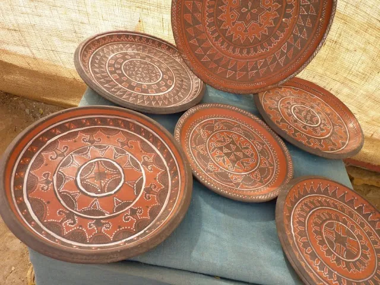
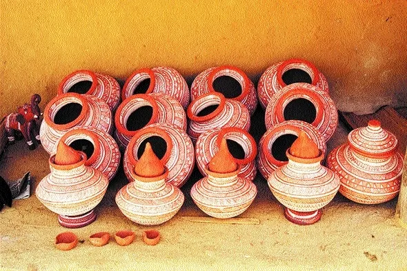
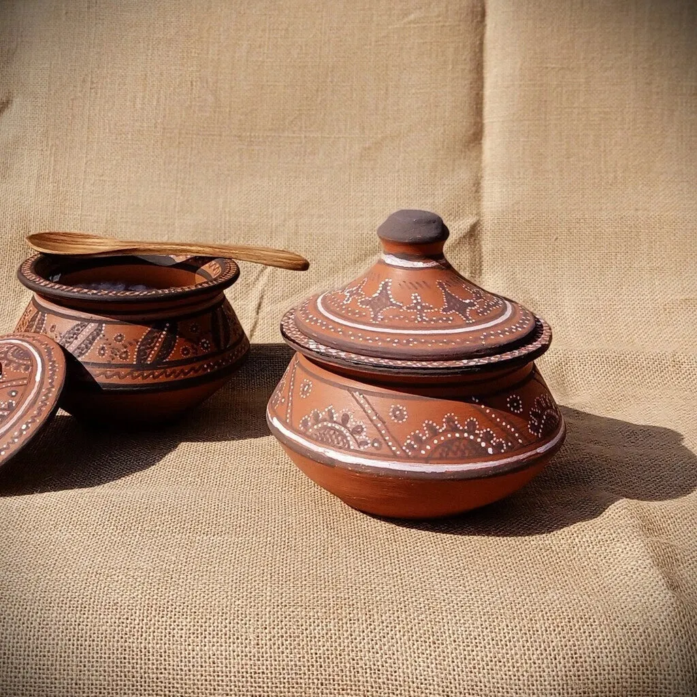

Kutch pottery is one of the oldest crafts in the region, with archaeological evidence dating back to the Harappan civilization over 4,000 years ago. The Kumbhar (potter) community has perfected the art of transforming local clay into functional vessels, decorative items, and magnificent terracotta sculptures. Using traditional kick wheels passed down through generations, these master potters create everything from simple water pots to elaborate six-foot terracotta horses for temple offerings. The earthy aroma of freshly fired pottery and the rhythmic sound of the wheel are integral to Kutch's cultural heritage.
Types of Pottery
- Matka: Water pots that keep water naturally cool — 10-15°C lower.
- Terracotta Horses: Magnificent sculptures for temple offerings.
- Kitchen Vessels: Cooking pots, serving dishes, storage jars.
- Diyas: Oil lamps essential for religious ceremonies.
- Decorative Figurines: Birds, animals, and human figures.
Where to Experience
- Khavda Village: Famous for traditional pottery techniques.
- Lodai Village: Known for painted terracotta work.
- Bhuj Markets: Wide selection of pottery items.
- Artisan Workshops: Watch potters at work on traditional wheels.
The Pottery Process
From clay to creation

Traditional Kick Wheel
Potters sit cross-legged and kick a heavy stone disc to spin the wheel. This ancient technique requires immense skill and perfect rhythm.

Shaping the Clay
Locally sourced clay is mixed with rice husk or sand to prevent cracking. The potter shapes it with hands alone — no molds used.

Firing Process
Traditional open-air kilns use cow dung cakes as fuel. The kiln burns for 12-24 hours, reaching 800-1000°C for proper firing.

Decoration
Hand-painting with natural pigments, incised patterns, slip decoration, and even mirror work embedded in clay create stunning finishes.
Did You Know?
4,000+ Years
Kutch pottery traditions trace back to the Harappan civilization.
Natural Cooling
Terracotta pots keep water 10-15°C cooler than room temperature.
100 kg Horses
The largest terracotta horses can weigh over 100 kg.
30+ Generations
Some pottery techniques have been passed down for 30+ generations.
Buying Tips
- Visit Khavda & Lodai: Authentic pieces directly from artisans.
- Check for Cracks: Inspect carefully before purchasing.
- Hand-Painted vs Plain: Painted items are more valuable.
- Ask About Glazes: Confirm food-safe for kitchen items.
Price Range
- Diyas & Small Cups: ₹50 - ₹200
- Water Pots (Matka): ₹300 - ₹800
- Painted Vessels: ₹1,500 - ₹5,000
- Terracotta Horses: ₹3,000 - ₹20,000+
Explore Other Crafts
Gallery